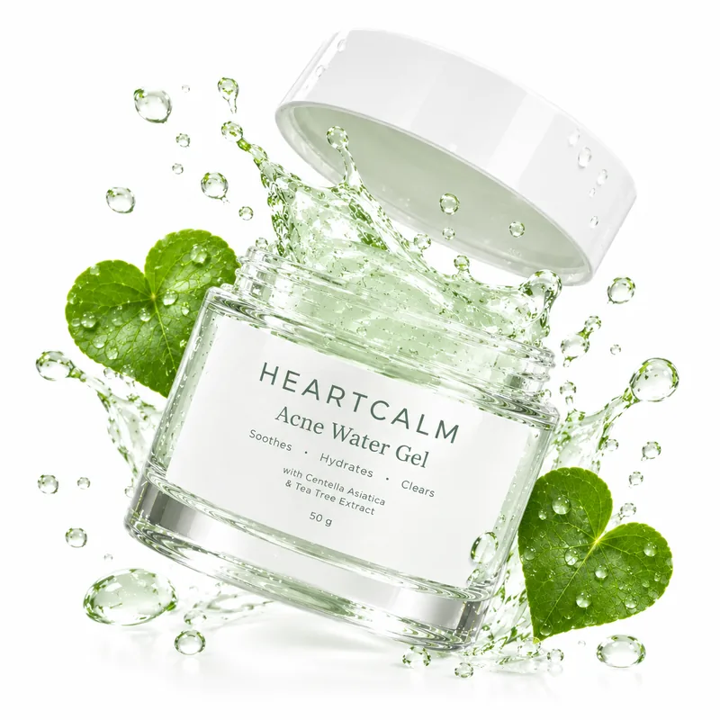
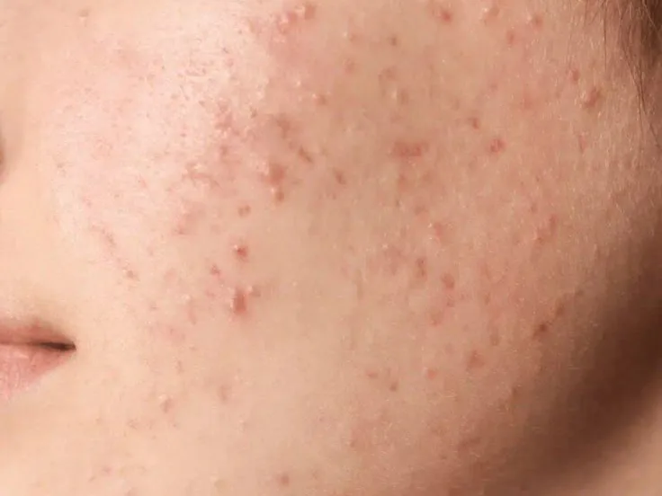
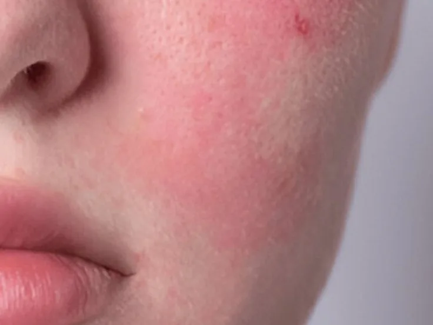
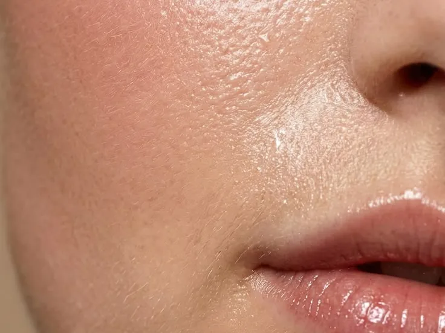
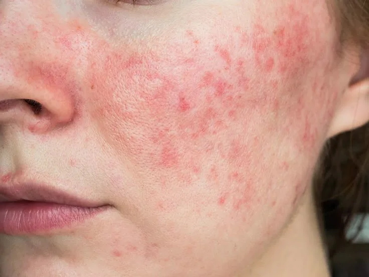
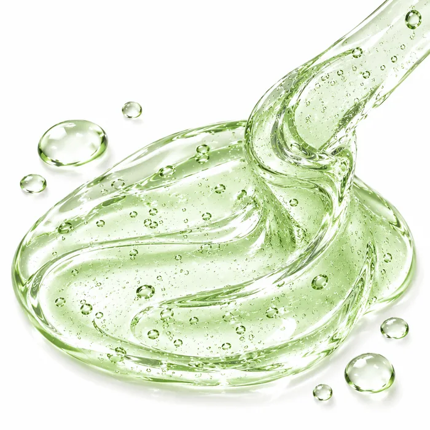
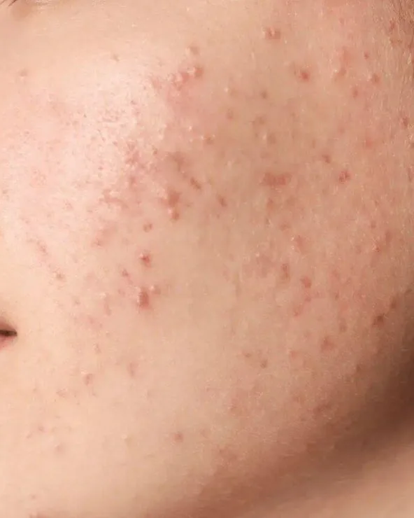
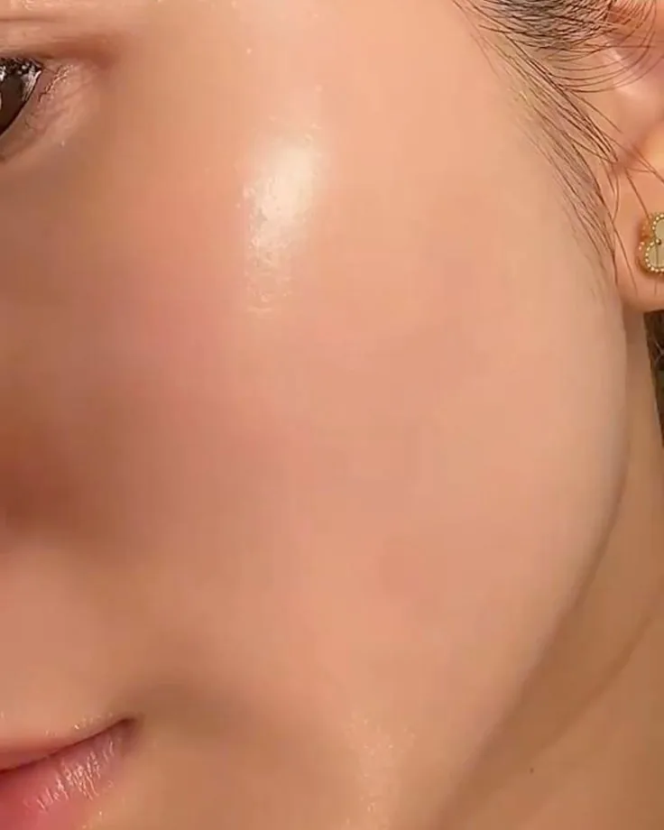

★★★★★
“Jerawat menjelang haid biasanya bikin perih. Aku pakai ini malam hari, paginya merahnya sudah jauh lebih kempis.”
AuliaKulit berjerawat
10% Panthenol Barrier Repair Water Gel Moisturizer
Pelembab water gel yang menenangkan kulit berjerawat, menghidrasi lebih dalam, dan menjaga skin barrier tetap sehat.
Konsultasi Admin




Pori yang tersumbat dan peradangan memunculkan jerawat aktif yang terasa nyeri. HEARTCALM membantu membersihkan pori dan meredakan peradangannya.
Menenangkan jerawat.
Membersihkan pori-pori.
Hidrasi tanpa lengket.

Enam hal yang kamu rasakan saat kulit berjerawat dirawat dengan lembut.
Meredakan kemerahan, rasa perih, dan sensasi terbakar pada peradangan jerawat aktif.
Menjaga keseimbangan air dan minyak alami di wajah tanpa membuat kulit terasa kering ditarik.
Formulasi water gel memberi sensasi sejuk dan cepat meresap tanpa rasa lengket.
Memperkuat lapisan pelindung kulit agar tidak mudah breakout kembali akibat faktor eksternal.
Membantu menjaga kelembapan kulit agar terasa lembut dan nyaman sepanjang hari.
Membantu menyamarkan tampilan noda bekas jerawat agar warna kulit tampak lebih merata.
Pemakaian rutin pagi dan malam setelah wajah dibersihkan.

Hari pertama, sebelum pemakaian.

Setelah 4 minggu pemakaian rutin.
Hasil dapat berbeda pada setiap orang, tergantung jenis kulit dan keteraturan pemakaian.
Cerita pengguna HEARTCALM Water Gel.
“Jerawat menjelang haid biasanya bikin perih. Aku pakai ini malam hari, paginya merahnya sudah jauh lebih kempis.”
“Aku sering di luar ruangan dan gampang berminyak. Gel ini cepat meresap, dipakai sebelum sunscreen pun tidak menggumpal.”
“Biasanya kulitku terasa panas tiap coba produk baru. Yang ini adem dan tidak perih, jadi aman kupakai setiap hari.”
“Pipiku kering tapi area hidung berminyak. Teksturnya ringan, jadi hidung tidak tambah kilap dan pipi tetap lembap.”
Testimoni di atas adalah contoh ilustrasi, bukan ulasan pelanggan sebenarnya.